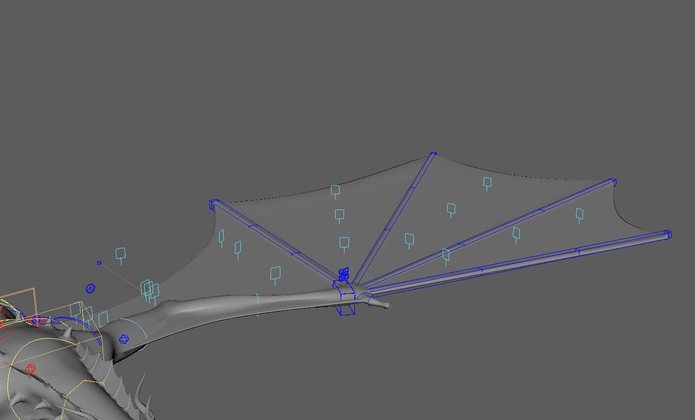

Engineering Art
A collection of rigging breakdowns, Python tools, and pipeline solutions.

Python / Rigging
Automated Dragon Wing System
Developing a modular wing rig using Matrix nodes, UV Pins, and Python to handle complex membrane folding and stretching automatically.

Maya API / ToolDev
Mastering Deformation Layers
A deep dive into high-performance skin weight export using OpenMaya, handling sparse data compression, and managing deformation stacks.